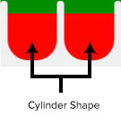
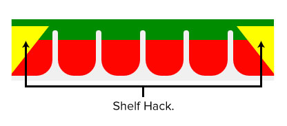
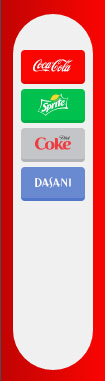

CSS3 Final Project: Vending Machine Tutorial
Now that you've learned some CSS basics and advanced techniques, it's time to put your new skills to use. In this Final Project tutorial, we will be building a functioning Coca-Cola vending machine. View the demo here. If you want to get a head start, you can download all the project files here. Let's jump in!
Table of Contents:Installation and Directory files:
We'll start by creating a new folder structure and getting things ready so we can start writing our markup and CSS styles. We'll be using Node.js and Gulp to speed up our workflow.
Creating directory files & folders:
- Create a new folder called 'vending-machine'.
- Inside of 'vending-machine', create the following folders/files:
- New folder called ‘assets’.
- New file called 'index.html'.
- New file called 'gulpfile.js'.
- New file called 'package.json'.
- Inside of ‘assets’, create the following folders/files:
- New folder called 'graphics'
- New folder called 'styles'
- Inside of 'source', create another folder called 'stylus', and create the following files/folders inside:
- New file called 'style.styl'.
- New folder called 'stash'.
Installing node:
Note: If this is your first time installing Node, check out these tutorials for OS X and Windows.
Now that we have all the files and folders we need, let's install Node:
- Install 'nodejs'.
- Install 'npm' if it is not installed with nodejs.
- Open 'package.json' and add the following:
{
"devDependencies": {}
}
'package.json' will contain a list of our installed plugins using 'npm' and 'gulp'.
Installing gulp and plugins:
We'll be using 'gulp' for 3 main reasons:
- Compiling 'stylus' into 'CSS'.
- Local server using 'gulp-connect'.
- Live reload using 'gulp-connect' and 'gulp-watch'.
Open command line and navigate to the location of our 'vending-machine' folder, use the following command to install plugins, where 'gulp' is the plugin name. Command Line
npm install gulp -save-devNext, we need to install the following 'gulp' plugins:
- gulp.
- gulp-connect.
- gulp-stylus.
- gulp-watch.
- nib for stylus.
Note: Nib is set of extensions for Stylus CSS preprocessor language. We will be using 'nib' because it provides CSS3 helpers mixins/gradients and to automatically prefix all our CSS properties for a better browser support.
After installing the previous plugins our 'package.json' file should look like this:
JSON{
"devDependencies": {
"gulp": "^3.8.10",
"gulp-connect": "^2.2.0",
"gulp-stylus": "^2.0.0",
"gulp-watch": "^4.1.0",
"nib": "^1.1.0"
}
}
We're using -save-dev or -save so we can install all those plugins at a later point as long as the 'package.json' file is included in our new directory.
Setting up gulpfile.js:
Gulp is a simple, but powerful system to do all kind of file maniupulation: minifying JavaScript code, compiling CSS with the help of different preprocessor engines, and so on. Gulp is configured with JavaScript-based rules which are stored in gulpfile.js.
After installing our gulp plugins and nib, we can now start using them directly in our 'gulpfile.js' file.
Javascript
// Gulp Variables
var gulp = require('gulp'); // For gulp
watch = require('gulp-watch'); // For watching files and auto reload
connect = require('gulp-connect'); // For local server and auto reload
stylus = require('gulp-stylus'); // For compiling Stylus
nib = require('nib'); // A CSS3 extensions for Stylus
Next, let's create a variable to hold our paths and call it paths. Let's add our source stylus link inside of that variable for future usage in our gulp tasks.
Javascript
// Paths
var paths = {
stylus: [
'source/stylus/**/*.styl'
]
}
Creating a gulp task:
Now, let's create a gulp task and call it stylus. Here we will link the src to our paths variable.
Javascript
// Stylus Task
gulp.task('stylus', function() {
gulp.src(paths.stylus)
.pipe(stylus({
// Tells it to use nib.
use: nib(),
// Compresses our final CSS to save bandwidth and improve performance
compress: true
}))
// We specify location of compiled file in gulp.dest() rule
.pipe(gulp.dest('./assets/styles'))
.pipe(connect.reload());
});
// We also need to add include nib library to the stylesheets with @import 'nib'
This stylus task will find all stylus files in the gulp.src and compile them to ./assets/styles/.
Next, let's create all of our gulp tasks just like the previous one (for the rest of the gulp tasks see the project files). Then let's make one final task to combine all the tasks we made, using one command.
Javascript
// Final Task
gulp.task('server', ['webserver', 'watch', 'stylus']);
Running our server:
Let's get the testing server up and running! Open a new command line window, and write the following:
Command Linegulp serverMake sure you are in 'root' directory, where our 'gulpfile.js' is.
Markup and Styles
Now that we have our testing server set up, let's dive into the CSS and HTML. We'll be using Stylus to improve our CSS workflow. As we create the vending machine, the key will be to split up each part of the machine while keeping in mind how the final result will be animated.
Why Stylus?
Although we could use any preprocessor for this demo, we're going with Stylus for the following reasons:
- Very clean and flexible syntax
- Indentation based syntax makes CSS code structured right away
- Colons and semicolons (: and ;) are optional
- Brackets are optional as well ({ })
- Variables
- Code mixins
- Nib (more about nib)
Note: Other available widely used CSS preprocessors include LESS and SASS.
Note: SASS's syntax is similiar to Stylus's but requires the use of :.
Variables:
Plain CSS does not have support for variables. For example, let's say you have a main font color in your design. It is not possible to define this color in a single place and then just use it elsewhere dynamically. You're forced to repeat this color everywhere. If this main color changes, all locations where it was used would have to be updated as well.
With variables it's possible to define a color once and then access its value by variable name.
For this tutorial we'll need quite a few variables: colors, bottle sizes, duration of animations and so on. Without a CSS preprocessor and the use of variables, we'd lose a lot of time writing repetitive code. For this reason, tools that speed up your CSS workflow are a great investment.
Let's get started by defining our variables. Below I have defined the font, size of the elements (such as the vending machine and bottle), and important colors. To help you move faster, we'll define them now and move on. Exactly what each variable does will become clear later on in the tutorial.
/* Variables :-
--------------------------- */
$main-font = 'Gotham', Arial, sans-serif
$machine-width = 550px
$machine-height = 750px
$machine-glassview-height = 120px
$machine-spacer = 1em
$bottle-width = 1.65em
body
font-family $main-font
/* Colors :-
--------------------------- */
// General Colors
$machine-mc = #F80506
$machine-tc = #666666
$machine-ic = #444444
$machine-lc = #EEEEEE
$machine-llc = #FFFFFF
// Bottle Colors
$coke-color = $machine-mc
$sprite-color = #00B945
$diet-color = #BCBDC0
$dasani-color = #5E7ECA
// Glass Colors
$glass-cc = #BFFFFF
$glass-bg = #AFAFAF
$glass-bc = darken($glass-bg, 30%)
/* ... */
Planning
For an animation of this size and complexity, it's important to split it up into smaller, more manageable parts. This planning phase is key to developing CSS efficiently.
Let's start by separating our mockup (included in the project files) into different parts. Or to be more precise, into following parts:
- Machine top.
- Machine frame.
- Machine view.
- Machine Pole/Claws.
- Machine view bottom.
- Machine Shelves.
- Machine side.
- Machine controls.
- Machine glass view.
1. Machine top
Let's start by creating the top of the vending machine. We'll do this by using perspective property in CSS.
When we apply the perspective property to an element, it is rendered using 3D perspective transformations. This technique will give us the ability to achieve the tilted shape needed to create the top of the vending machine. You can read about the perspective property here
CSS transforms will apply differently to this element because of the perspective property allowing us to easily make the tilted top part of the machine. With some additional spacing and positioning we'll get machine top to match the mockup exactly.
Machine Top
.machine-top-perspective {
perspective: 600px;
position: absolute;
width: 100%;
top: -86px;
left: 0;
}
.machine-top {
background-color: #666;
width: 90.3%;
margin: 0 auto;
height: 125px;
transform: rotateX(70deg);
}
// Machine Top perspective
.machine-top-perspective
perspective 600px
position absolute
width 100%
top -86px
left 0
.machine-top
background-color $machine-tc
width 90.3%
margin 0 auto // To center it in the middle
height ($machine-height / 6)
transform rotateX(70deg)
2. Machine Frame
Now let's build the frame of the vending machine. This will contain the window, bottles, pole, claw and big Coca-Cola logo.
Let's set it 100% height so that it inherits the parent height we defined in the variables section. We'll use 19% padding-right because the machine-side (which we'll create later) is also 19% and we are positioning the machine side absolutely within our parent container.
Note: The height property with height: 100% only applies if the parent element has a fixed height (like our example) or if all its parent elements have height set to some percentage, including the body tag.
Machine Frame
.machine-frame-container {
padding-right: 19%;
height: 100%;
}
.machine-frame {
width: 100%;
height: 100%;
padding: 1em;
}
.machine-frame-container
padding-right 19%
height 100%
.machine-frame
width 100%
height 100%
padding $machine-spacer
3. Machine View
In the previous step, we added padding: 1em; to .machine-frame. This bit of code will push our elements inside because we are using the border-sizing property. Next, let's build the machine view which contains the window.
Link: More about box sizing
Note: Sometimes when you apply a border-radius to an element, elements positioned absolutely within it will show outside of the border-radius trimming, and to fix that you need to apply opacity: .99; to the element that has the overflow: hidden; property. This issue only occurs in webkit browsers (read more).
Machine View
.machine-view {
background-color: #eee;
height: 100%;
width: 100%;
position: relative;
padding: 1em;
}
.machine-window-container {
height: 70%;
width: 100%;
max-width: 100%;
min-width: 100%;
overflow: hidden;
border-radius: 0.5em;
position: relative;
opacity: 0.99;
}
.machine-window {
background-color: #fff;
position: relative;
border-radius: 0.5em;
width: 100%;
height: 100%;
overflow: hidden;
}
.machine-view
background-color $machine-lc
height 100%
width 100%
position relative
padding $machine-spacer
// Machine Window
.machine-window-container
height 70%
width 100%
max-width 100%
min-width 100%
overflow hidden
border-radius ($machine-spacer * .5)
position relative
// Hack fix
opacity .99
.machine-window
background-color white
position relative
border-radius ($machine-spacer * .5)
width 100%
height 100%
overflow hidden
4. Machine Pole/Claws
Next we'll build the vending machine pole and claws. This part is tricky because we want to build it in a way that makes it easy to animate later on. We'll use the translate property to animate the pole and claw. Normally translating something with a percentage value will affect its dimensions, but we'll use transform: translateX(100%); on an element so the value of the 100% is going to be the width of that element. As a result it will only move on the x-axis in relation to its width. Check out the demo to see this in action.
Note: The reason we want to use percentage based values in our translate property, is to be able to combine it with CSS keyframes, we will talk more about that in our animations section.
For the pole and claws, we'll use containers so we can move our pole/claws to the right and left using the translate property with a percentage value. Instead of animating the pole itself we'll animate the container which has the full width/or height of the place we want to move the pole within .machine-view. By animating the pole/claw container, we'll be able to use a percentage value and move our pole and claw based on the .machine-view width or height.
Machine Pole
4.1. Claws
Next we'll build the claws with the same movement technique discussed above. Based on the y-axis, let's use the same trick of moving a parent container of the claws using a percentage value.

Machine Claws
Styles for both Pole & Claw:
.machine-pole-wrapper {
z-index: 100;
width: 100%;
height: 100%;
top: 0;
left: 0;
position: absolute;
}
.machine-pole-container {
position: relative;
width: 100%;
height: 100%;
}
.machine-pole {
position: absolute;
width: 100%;
height: 100%;
transition: all 1s;
transform: translateX(-3%);
}
.pole {
position: absolute;
width: 0.75em;
left: 0;
top: 0;
height: 100%;
background-color: #666;
transition: all 1s;
box-shadow: 4px 3px 8px rgba(0,0,0,0.45);
}
.machine-claw-wrapper {
z-index: 100;
width: 100%;
height: 100%;
top: 0;
left: 0;
position: absolute;
}
.machine-claw-container {
position: relative;
width: 100%;
height: 100%;
transition: all 1s ease;
transform: translateY(10%);
}
.claw-bottles {
width: 1.65em;
height: 77px;
display: inline-block;
position: absolute;
left: 25px;
opacity: 1;
top: -26px;
z-index: 4;
}
.claw-bottles img {
opacity: 0;
width: 100%;
position: absolute;
display: inline-block;
}
.machine-claw {
width: 3.25em;
height: 3.25em;
padding: 0.35em;
background-color: #f80506;
position: absolute;
border-bottom: 0.25em solid #666;
left: 0.75em;
top: 0;
z-index: 6;
}
.machine-claw >img {
display: inline-block;
margin-top: 16%;
width: 100%;
}
.machine-claw:after {
content: '';
color: #000;
position: absolute;
right: 0;
top: -12px;
width: 0;
height: 0;
border-style: solid;
border-width: 12px 0 0 12px;
border-color: transparent transparent transparent #c60405;
}
.machine-claw:before {
content: '';
color: #000;
position: absolute;
left: 0;
top: -12px;
width: 0;
height: 0;
border-style: solid;
border-width: 12px 12px 0 0;
border-color: transparent #c60405 transparent transparent;
}
// Machine Pole
.machine-pole-wrapper
z-index 100
width 100%
height 100%
top 0
left 0
position absolute
.machine-pole-container
position relative
width 100%
height 100%
// To move the pole
.machine-pole
position absolute
width 100%
height 100%
transition: all 1s
// Normal State
transform translateX(-3%)
.pole
position absolute
width ($machine-spacer * .75)
left 0
top 0
height 100%
background-color $machine-tc
transition: all 1s
box-shadow 4px 3px 8px rgba(0,0,0, .45)
.machine-claw-wrapper
z-index 100
width 100%
height 100%
top 0
left 0
position absolute
// To move the claw
.machine-claw-container
position relative
width 100%
height 100%
transition all 1s ease
// Normal State
transform translateY(10%)
.claw-bottles
width $bottle-width
height 77px
display inline-block
position absolute
left 25px
opacity 1
top -26px
z-index $index-1
// Reset
// Fix Me
img
opacity 0
width 100%
position absolute
display inline-block
.machine-claw
width $machine-spacer * 3.25
height @width
padding $machine-spacer * .35
background-color $machine-mc
position absolute
border-bottom ($machine-spacer * .25) solid $machine-tc
left ($machine-spacer * .75)
top 0
z-index $index-2
>img
display inline-block
margin-top 16%
width 100%
// Right Claw
&:after
content ''
color black
position absolute
right 0
top -12px
width: 0
height: 0
border-style: solid
border-width: 12px 0 0 12px
border-color: transparent transparent transparent darken($machine-mc, 20%)
// Left Claw
&:before
content ''
color black
position absolute
left 0
top -12px
width: 0
height: 0
border-style: solid
border-width: 12px 12px 0 0
border-color: transparent darken($machine-mc, 20%) transparent transparent
5. Machine bottom
Next, we'll build the bottom of the vending machine. Let's position our .machine-bottom absolutely at the bottom of our .machine-view thereby placing it at the bottom of our view just like the mockup.
Now let's create the bottom Coca-Cola logo by using a an image and a div. We'll start by positioning our image absolutely within our div and give it a width of 135%. Let's also visually center it in the middle by giving it a negative left value left: -18%; while applying the overflow: hidden; to our parent div, hiding all the overlapping edges of the logo.
Machine Bottom
.machine-bottom {
position: absolute;
bottom: 0;
left: 0;
width: 100%;
max-width: 100%;
height: 25%;
overflow: hidden;
}
.machine-bottom img {
position: absolute;
left: -18%;
bottom: -5%;
display: inline-block;
width: 135%;
}
.machine-bottom
position absolute
bottom 0
left 0
width 100%
max-width 100%
height 25%
overflow hidden
img
position absolute
left -18%
bottom -5%
display inline-block
width 135%
6. Machine Shelves:
Next we'll create the machine shelves. This particular shape is a bit complex so we'll have to use some CSS tricks. We'll mainly rely on pseudo elements to create this shape.
Again, we'll have to approach this by separating the shapes into various components:
- Shelf Container
- Machine Shelf
- Shelf Block
- Shelf Seprators
- Cylinder Shape
- Shelf Hack
6.1. Shelf Container:
With .machine-window-row as our horizontal grid spacer, let's apply a height of 24% and margin-bottom of 1.5% to match our mockup.
Our shelf container is comprised of three pieces. The .machine-shelf-container is the general container within which we'll position .machine-window-row and .machine-shelf

Shelf Container
.machine-window-row {
height: 24%;
margin-bottom: 1.5%;
}
.machine-shelf-container {
height: 100%;
position: relative;
}
// Machine Window Row
.machine-window-row
height 24%
margin-bottom 1.5%
.machine-shelf-container
height 100%
position relative
6.2. Machine Shelf:
By giving our .machine-shelf 70% height, it will take 70% of the height of its container (in this case .machine-window-row) which has 24% height.
Machine Shelf
.machine-shelf {
width: 100%;
height: 70%;
position: absolute;
bottom: 9px;
}
.machine-shelf
width 100%
height 70%
position absolute
bottom 9px
6.3. Shelf Block:
The shelf block is basically a grid spacer with a width of 16.66%. Since there are 6 columns in the vending machine we get that figure by doing 100% / 6 = 16.66%.
.shelf-block {
height: 100%;
width: 16.6666666%;
display: inline-block;
float: left;
position: relative;
}
.shelf-block
height 100%
width 16.6666666%
display inline-block
float left
position relative
6.4. Shelf Separators:
Next, let's build the shelf separator. To create this shape with CSS, we'll use the pseudo element &:before. Let's give it a fixed width and height and position it exactly in the middle between each .shelf-block so when it's covered with Cylinder Shape, it will match the mockup.
Shelf Seprators
.shelf-block:before {
content: '';
border-radius: 1em;
height: 80%;
width: 8px;
position: absolute;
left: 0;
bottom: 0;
margin-left: -4px;
display: inline-block;
background-color: #eee;
}
.shelf-block
&:before
content ''
border-radius 1em
height 80%
width 8px
position absolute
left 0
bottom 0
margin-left -4px
display inline-block
background-color $machine-lc
6.5. Cylinder Shape:
Now let's build the cylinder. Again, to create this shape through CSS we'll use pseudo element &:after, positioning it to be exactly in the center of our .shelf-block and giving it height to match the mockup's background. Of course we'll be creating this for six different .shelf-block. Since we are making them take the full width of our row with the same background these elements combine into one, unified shape.

Cylinder Shape
.shelf-block:after {
content: '';
width: 87.5%;
height: 65%;
background-color: #b7b7b7;
display: inline-block;
position: absolute;
bottom: -2px;
left: 4px;
z-index: 4;
border-radius: 0 0 1.45em 1.45em;
}
.shelf-block
height 100%
width 16.6666666%
display inline-block
float left
position relative
&:after
content ''
width 87.5%
height 65%
background-color #B7B7B7
display inline-block
position absolute
bottom -2px
left 4px
z-index $index-1
border-radius 0 0 1.45em 1.45em
6.6 Shelf Hack:
To create the ends of the shelf (see mockup below), we'll write a little CSS hack to achieve the slanted triangle shape. This little visual hack gives the illusion of depth. Again, we'll use pseudo elements and add span.shelf-hack to the first and last sections of each shelf row. This allows us achieve the tilted view of the shelf background that gives each bottle row the depth it has in the mockups.
Importantly, we did not use the &:before pseudo element because it would cause property conflicts with the shelf separators we built earlier.

Shelf Hack
/* General Properties together */
.shelf-hack {
display: inline-block;
height: 100%;
border-radius: 0;
position: absolute;
width: 0;
bottom: 0;
height: 0;
border-style: solid;
background-color: transparent;
margin-left: 0;
z-index: 6;
}
.shelf-hack
display inline-block
height 100%
border-radius 0
position absolute
width 0
bottom 0
height 0
border-style solid
background-color transparent
margin-left 0
z-index $index-2
To control our span.shelf-hack we'll select them through their parent container .shelf-block. Next, let's select the shelf-block using .machine-shelf. This way we can select just the first and the last .shelf-block allowing us to select span.shelf-hack from each row.
.machine-shelf .shelf-block:first-child .shelf-hack {
left: 0;
border-width: 70px 55px 0 0;
border-color: #fff transparent transparent transparent;
}
.machine-shelf .shelf-block:first-child:after {
border-radius: 0 0 1.45em 0;
left: 0;
width: 94%;
}
.machine-shelf .shelf-block:last-child:after {
border-radius: 0 0 0 1.45em;
left: auto;
right: -1px;
width: 94.5%;
}
.machine-shelf .shelf-block:last-child .shelf-hack {
right: -1px;
border-width: 0 55px 70px 0;
border-color: transparent #fff transparent transparent;
}
.machine-shelf
.shelf-block
&:first-child
// Gives the illusion of the shelf sides
// In reality this is just a CSS triangle that has the same color as the parent background.
.shelf-hack
left 0
border-width 70px 55px 0 0
border-color white transparent transparent transparent
&:after
border-radius 0 0 1.45em 0
left 0
width 94%
&:last-child
&:after
border-radius 0 0 0 1.45em
left auto
right -1px
width 94.5%
.shelf-hack
right -1px
border-width 0 55px 70px 0
border-color transparent white transparent transparent
7. Machine side
Now we'll create the machine side that contains the buttons and glass dispenser.
Note: We'll be using a Nib gradient mixin to make our side background color. We'll also give it a 19% width based on the space left after building our view.
Machine side
.machine-side {
background: linear-gradient(to left, #f80506, #ba0405);
position: absolute;
top: 0;
right: 0;
width: 19%;
height: 100%;
padding: 0.75em;
text-align: center;
}
.machine-side-top {
width: 100%;
padding-top: 1.5em;
padding-bottom: 1.5em;
}
.machine-side-top img {
max-width: 45%;
display: inline-block;
}
.machine-side-bottom {
position: absolute;
bottom: 0;
width: 100%;
left: 0;
padding-top: 1.5em;
padding-bottom: 2.5em;
}
.machine-side-bottom img {
display: inline-block;
max-width: 40%;
}
// Machine Side
.machine-side
background linear-gradient(right, $machine-mc, darken($machine-mc, 25%))
position absolute
top 0
right 0
width 19%
height 100%
padding ($machine-spacer * .75)
text-align center
// Machine Top Container
.machine-side-top
width 100%
padding-top ($machine-spacer * 1.5)
padding-bottom ($machine-spacer * 1.5)
img
max-width 45%
display inline-block
// Machine Bottom Container
.machine-side-bottom
position absolute
bottom 0
width 100%
left 0
padding-top ($machine-spacer * 1.5)
padding-bottom ($machine-spacer * 2.5)
img
display inline-block
max-width 40%
8. Machine Controls
Now we'll build the buttons using CSS, a mixture between border-radius, and a different background/border color for each bottle.
Note: Here we'll use stylus functions and mixins to achieve the CSS result below, making it easier to change and adapt in the future.

Machine Controls
[class^="activator-"],
[class*=" activator-"] {
display: inline-block;
width: 100%;
border-radius: 0.3em;
padding: 0.25em;
margin-bottom: 0.35em;
border-bottom: 0.2em solid transparent;
}
[class^="activator-"] img,
[class*=" activator-"] img {
vertical-align: top;
display: inline-block;
width: 70%;
}
.activator-coke {
background-color: #f80506;
border-bottom-color: #df0505;
}
/* And different colors for each button type */
// Our Button Mixin Using Stylus
// Mixin for cleaner and reusable code.
// For coloring the buttons and their shadows and hover states.
$button-mixin(n)
background-color n
border-bottom-color darken(n, 10%)
// General Button Rules
[class^="activator-"], [class*=" activator-"]
display inline-block
width 100%
border-radius ($machine-spacer * .3)
padding ($machine-spacer * .25)
margin-bottom .35em
border-bottom .2em solid transparent
img
vertical-align top
display inline-block
width 70%
.activator-coke
$button-mixin($coke-color)
.activator-sprite
$button-mixin($sprite-color)
.activator-diet
$button-mixin($diet-color)
.activator-dasani
$button-mixin($dasani-color)
9. Machine glass view
Next we'll create the machine glass view where the bottle are dispensed. To approach this, we'll have to separate this element into different components:
- Glass Container.
- Recreating depth of the inner part in CSS.
- Glass cover.
9.1. Glass Container:
The first step is creating the container .machine-glassview. Here, we'll apply the fixed height values from the variables we made in the beginning of our tutorial.
We'll use.machine-glassview to hide the sliding glass door when it's being opened. We'll also use this container to hide the four different bottles that appear when they are chosen after the pole and claw animation. By using the overflow: hidden; we can position elements inside of the container and out of view for the user.
9.2. Container depth:
For top part of this shape, let's use a simple CSS box with a 1px border and with position it so we create the illusion of depth like in the mockup, Check figure - 2
Now for the bottom part of the container, we'll use the same perspective method we used for .machine-top, Check figure - 3
Machine Depth
9.3. Glass Cover:
For the last part of our machine glass view, let's create the glass cover. The first step is making it take the full width and height of our .machine-glassview. Next, let's add a nib linear-gradient to make the CSS linear gradient using the variables we made in the beginning of the tutorial. By adding an opacity to the glass cover, we can slide the bottles under it to make achieve the illusion of depth and match the mockup.
By increasing the z-index: value; of our glass cover we made sure it always shows above the bottles and creates the effect of opening while the bottle is still inside the container.
Glass Cover
/* Glass View :-
--------------------------- */
.machine-glassview {
margin-top: 0.5em;
height: 120px;
width: 100%;
overflow: hidden;
position: relative;
}
.glass-container-holder {
height: 100%;
position: absolute;
width: 100%;
top: 0;
left: 0;
}
.depth-container {
background-color: #afafaf;
width: 100%;
height: 100%;
perspective: 45px;
overflow: hidden;
}
.top-depth {
height: 84%;
width: 70%;
background-color: transparent;
border: 1px solid #7b7b7b;
border-top: transparent;
border-bottom: transparent;
margin: 0 auto;
}
.bottom-depth {
width: 100%;
margin: 0 auto;
background-color: transparent;
height: 38px;
transform: rotateX(83deg);
border: 1px solid #7b7b7b;
}
.glass-cover {
opacity: 0.65;
position: absolute;
z-index: 10;
top: 0;
left: 0;
background: linear-gradient(to bottom, #bfffff, #fff);
width: 100%;
height: 100%;
transition: all 0.3s ease;
transform: translateY(0%);
}
/* Glass View :-
--------------------------- */
.machine-glassview
margin-top $machine-spacer * .5
height $machine-glassview-height
width 100%
overflow hidden
position relative
.glass-container-holder
height 100%
position absolute
width 100%
top 0
left 0
// Top Depth
.top-depth
height 84%
width 70%
background-color transparent
border 1px solid $glass-bc
border-top transparent
border-bottom transparent
margin 0 auto
// Bottom Depth
.bottom-depth
width 100%
margin 0 auto
background-color transparent
height 38px
transform rotateX(83deg)
border 1px solid $glass-bc
// Glass Cover
.glass-cover
opacity .65
position absolute
z-index $index-4
top 0
left 0
background linear-gradient(top, $glass-cc, white)
width 100%
height 100%
transition all .3s ease
transform translateY(0%)
Animations:
Animation strategy/hacks:
As you have seen in the previous sections, we have to use some visual tricks to create the illusion of a functioning vending machine. This is doubly the case when creating the animations.
Bottles moving from shelf to glass view:
To achieve our bottle moving effect from the shelf to our glass view, we have a bottle of each type inserted in more than one location. One of those locations is the claw. In our keyframes animation we'll only show the bottle we've hidden in the claw once it's time for the claw to grab the bottle. Once the claw starts moving with the bottle, we hide the bottle on the shelf and show the bottle in the claws until it is hidden under the .machine-side. Next, we make the bottle disappear again so on its way back, the claws are empty.
Bottle dropping into the glass view:
Again, we'll use the same method to create the illusion of a bottle dropping into the glass container. A bottle of each type is hidden in the glass container until after the bottle has been picked up from the shelf and moved into the container.
Replacing the bottle on the shelf:
After a user selects a bottle, we want to replace it on the shelf with a new bottle. To do that we'll make three bottles instead of two in each .shelf-block. By default we will hide the bottle in the middle and we will position it exactly on top of the bottle on the back. This way, we have two bottles on top of each other and one in front, thus achieving the same look that other .shelf-block have and creating the illusion of a replaced bottle.
Keyframes Animation:
Now, for the fun part: creating the keyframe animations. It's extremely important that we time our animations to start and end in unison. We'll create a total of ten steps by creating a keyframe at every 10% mark 10 / 5 = 0.5. This is the duration of each step based on the total time of the animation. We will use the following template to make all our keyframes:
Note: We are using a variable in our stylus section so we can maintain the same duration everywhere in our CSS. The same is true for animation-duration in all keyframes related to moving the bottle.
@keyframes animationName {
0% { .. }
10% { .. }
20% { .. }
30% { .. }
40% { .. }
50% { .. }
60% { .. }
70% { .. }
80% { .. }
90% { .. }
100% { .. }
}
// So we can time everything together we will set all animation duration to a fixed number
// and all keyframes will need to follow the same concept, a step every 10%,
// this way we can control all the animations separately with the same timing.
$anim-dur = 5s
@keyframes animationName
0%
...
10%
...
20%
...
30%
...
40%
...
50%
...
60%
...
70%
...
80%
...
90%
...
100%
...
Next, we will create a keyframes animation for the following parts:
- Moving the pole to the location of .shelf-block with the three bottles.
- Moving the claw up/down to the location of .shelf-block with the bottle you want to grab.
- Showing the bottle in the claw.
- Switching the three bottles to achieve the refilling of the bottles shelves.
- Dropping the bottle into the glass view.
As I mentioned earlier, that we need to make all our keyframes the same steps and timing. This makes the animation far easier to change. For example, if we add a transform property on the 30% step and all our animations have the same animation-duration then all the things we called using the transform property will be animating at the same time, allowing us to simply combine all animations.
Quick example (for the rest of the keyframes see the project files):
In this example we'll see how we connect all the keyframes animations together.
/* Moving Pole to location on the shelf. */
@keyframes poleToCoke {
0% { transform: translateX(-3%); }
10% { transform: translateX(10%); }
20% { transform: translateX(14%); }
30% { transform: translateX(14%); }
40% { transform: translateX(60%); }
50% { transform: translateX(95%); }
60% { transform: translateX(105%); }
70% { transform: translateX(105%); }
80% { transform: translateX(70%); }
90% { transform: translateX(50%); }
100% { transform: translateX(-3%); }
}
/* Moving Claw to location on the shelf. */
@keyframes clawToCoke {
0% { transform: translateY(10%); }
10% { transform: translateY(10%); }
20% { transform: translateY(10%); }
30% { transform: translateY(10%); }
40% { transform: translateY(20%); }
50% { transform: translateY(30%); }
60% { transform: translateY(40%); }
70% { transform: translateY(40%); }
80% { transform: translateY(20%); }
90% { transform: translateY(10%); }
100% { transform: translateY(10%); }
}
// Moving Pole to location on the shelf.
@keyframes poleToCoke
0%
transform translateX(-3%)
10%
transform translateX(10%)
20%
transform translateX(14%)
30%
transform translateX(14%)
40%
transform translateX(60%)
50%
transform translateX(95%)
60%
transform translateX(105%)
70%
transform translateX(105%)
80%
transform translateX(70%)
90%
transform translateX(50%)
100%
transform translateX(-3%)
// Moving Claw to location on the shelf.
@keyframes clawToCoke
0%
transform translateY(10%)
10%
transform translateY(10%)
20%
transform translateY(10%)
30%
transform translateY(10%)
40%
transform translateY(20%)
50%
transform translateY(30%)
60%
transform translateY(40%)
70%
transform translateY(40%)
80%
transform translateY(20%)
90%
transform translateY(10%)
100%
transform translateY(10%)
As you can see in our previous example, both animations values(Locations) change at the same keyframe step (40% step). At the end of the animation, they go back to their original location.
To achieve the mechanics of the machine pole/claw, we use clawToCoke keyframes which makes all the other keyframes related to moving our bottles start and end at the same location.
Javascript:
Activating Classes:
Now that we're done creating all the animation keyframes, we'll use Javascript to animate our keyframes, start them at the same time, and activate them with the buttons we made in the .machine-controls. Next, we'll build a few classes and trigger them with Javascript. This is the simplest way to activate all of our animations at once and end them in unison. JS also allows each button to restart the same animations loop for each bottle type without causing bugs.
Next we'll begin by activating classes, using the Coca-Cola bottle as an example (for the rest of the classes see the project files):
How it works:
.grab-bottle-coke .switching-coke {
animation: 5s cokeToGlass linear;
animation-iteration-count: 1;
animation-fill-mode: forwards;
}
.grab-bottle-coke .machine-claw-container {
animation: 5s clawToCoke linear;
animation-iteration-count: 1;
animation-fill-mode: forwards;
}
.grab-bottle-coke .machine-pole {
animation: 5s poleToCoke linear;
animation-iteration-count: 1;
animation-fill-mode: forwards;
}
.grab-bottle-coke .claw-coke {
opacity: 0;
animation: 5s clawChangeBottle linear;
animation-iteration-count: 1;
animation-fill-mode: forwards;
}
.grab-bottle-coke .bottle-coke {
animation: 5s bottleInGlass linear;
animation-iteration-count: 1;
animation-fill-mode: forwards;
}
/* And the same for each bottle type */
// Grabs Coke Bottle, Using coke specific keyframes.
.grab-bottle-coke
// Animation To Coke Bottle
// Moves pole and claw to proper positions
.switching-coke
animation $anim-dur cokeToGlass linear
animation-iteration-count 1
animation-fill-mode forwards
.machine-claw-container
animation $anim-dur clawToCoke linear
animation-iteration-count 1
animation-fill-mode forwards
.machine-pole
animation $anim-dur poleToCoke linear
animation-iteration-count 1
animation-fill-mode forwards
.claw-coke
opacity 0
animation $anim-dur clawChangeBottle linear
animation-iteration-count 1
animation-fill-mode forwards
.bottle-coke
animation $anim-dur bottleInGlass linear
animation-iteration-count 1
animation-fill-mode forwards
// And the same for each bottle type
As you can see we are combining all the classes related to the Coca-Cola bottle into one class to be used by our JS. Let's apply our animations directory to that class so the animations start only when the specific button is clicked.
Next, we'll use the same method create general classes for the bottles replenishing on the shelf and the bottle dropping into the glass view.
Example of general classes:
.grapping-bottle .glass-cover {
animation: 5s openGlass linear;
animation-iteration-count: 1;
animation-fill-mode: forwards;
}
.grapping-bottle .hide-bottle {
transition: all 0.2s ease;
opacity: 0;
filter: alpha(opacity=0);
}
.grapping-bottle .choose-drink {
opacity: 0;
}
.grapping-bottle .drink-me {
opacity: 1;
transition-delay: 5s;
}
.moving-bottles .bottle-back {
opacity: 0;
animation: 5s bottleBack linear;
animation-iteration-count: 1;
animation-fill-mode: forwards;
}
.moving-bottles .bottle-moving {
margin-top: -0.35em;
margin-left: -0.35em !important;
animation: 5s bottleMoving linear;
animation-iteration-count: 1;
animation-fill-mode: forwards;
}
.moving-bottles .bottle-front {
opacity: 1;
-ms-filter: none;
filter: none;
animation: 5s bottleFront linear;
animation-iteration-count: 1;
animation-fill-mode: forwards;
}
.grapping-bottle
.glass-cover
animation $anim-dur openGlass linear
animation-iteration-count 1
animation-fill-mode forwards
.hide-bottle
transition all .2s ease
opacity 0
.choose-drink
opacity 0
.drink-me
opacity 1
transition-delay $anim-dur
// This class activates the bottle stacking illusion.
.moving-bottles
.bottle-back
opacity 0
animation $anim-dur bottleBack linear
animation-iteration-count 1
animation-fill-mode forwards
.bottle-moving
margin-top -.35em
margin-left -.35em!important
animation $anim-dur bottleMoving linear
animation-iteration-count 1
animation-fill-mode forwards
.bottle-front
opacity 1
animation $anim-dur bottleFront linear
animation-iteration-count 1
animation-fill-mode forwards
Conclusion:
You made it! With CSS3, even the most complex animations are possible.
Go forth and use your newfound skills!In the demo, you can see that when a bottle is dispensed and clicked on, a popup appears emptying the bottle and showing the drink's motto. This is achieved with SVG techniques covered in the Final Project SVG tutorial. The code for that element is also included in the project files for this tutorial.